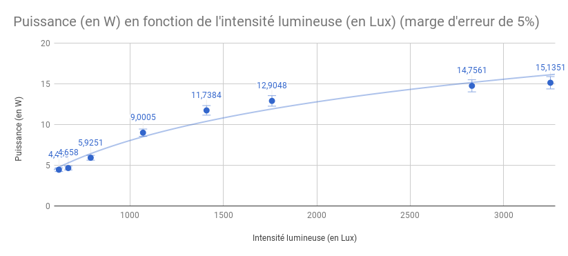

Carnet de bord
Jour 0 : 19/09/2017
Déroulement :
Présentation des TPE et formation des groupes.
Jour 1 : 26/09/2017
Objectifs :
Trouver un sujet, une problématique et éventuellement commencer à rechercher des informations qui seront utiles dans nos expériences.
Résultats :
Notre problématique est : “Comment l’énergie solaire thermique permet-elle de générer de l'électricité propre et renouvelable”. Nous pensons utiliser le Soleil pour faire bouillir de l’eau. Dans ce but nous avons cherché la quantité d’énergie nécessaire à faire bouillir 50 grammes d’eau. La vapeur produite pourrait alors être utilisée pour faire tourner une turbine et créer de l'électricité. L’énergie nécessaire à notre projet est de 16720 joules.
Jour 2 : 03/10/2017
Objectifs :
Tester la faisabilité de faire chauffer de l’eau avec la lumière.
Déroulement :
Nous tentons d’utiliser 4 lampes halogènes de 150w pour reproduire une partie de la lumière du Soleil. Après allumage des lampes, nous constatons une élévation de 10°C au niveau sur la température. Utilisation d’aluminium comme miroirs disposés, autour des lampes pour concentrer les rayons lumineux et ainsi augmenter la chaleur produite.
Conclusion :
On peut effectivement augmenter la température de l’eau à l’aide de la lumière, mais il nous faut une très grosse source d'énergie comme le Soleil. Or nous somme en automne et les rayons de ce derniers sont moins puissants. De plus, nous avons jugé notre sujet trop classique. Nous allons essayer d’en trouver un nouveau.
Jour 3 : 4/10/2017
Objectifs :
Trouver un nouveau sujet, le notre est bateau.
Déroulement :
Réflexion sur un nouveau sujet et une nouvelle problématique. Nous vérifions si le sujet semble réalisable d’un point de vue expérimental. Nous pensons avoir trouvé notre sujet et notre problématique.
Conclusion :
Notre sujet sera désormais : La synthétisation de bioplastique et notre problématique sera : “Comment créer du fil de PLA, pour les imprimantes 3D, grâce à des réactions chimiques”.
Jour 4 : date 5/10/2017
Objectifs :
Demander le matériel nécessaire au laborantin.
Déroulement :
Le laborantin nous a dit que notre expérience est trop compliquée pour la réaliser au loquidy. Nous avons donc décidé de changer de sujet une nouvelle fois. Nous pensons partir sur le “energy harvesting”. C’est à dire utiliser différents sources d’énergie comme : des différences de températures, l'énergie de la marche d’une personne, la lumière d’une pièce pour alimenter un objet connecté ( ici un capteur connecté). Notre nouvelle problématique est donc “Comment alimenter des objets connectés sans batteries ?”
Conclusion:
Nous avons une problématique, nous allons la faire valider par nos professeurs au prochain cours comme nous avons été trop long. Ensuite, nous allons commencer à rassembler le matériel nécessaire à la réalisation de notre projet.
Jour 5 : 10/10/2017
Objectifs :
Voir avec le laborantin le matériel à notre disposition pour nos expériences et terminer la séance avec nos expériences prêtes.
Déroulement :
Nous avons choisi le matériel que nous allons utiliser et celui que nous allons acheter par nos propres moyens pour nos expérience. Nous acheterons des cellules piézoélectriques et un module peltier, le Loquidy fournira la cellule photovoltaïque.
Conclusion :
Nous effectuerons une série d'au moins, 3 expériences différentes, afin de tester différentes manières permettants d’extraire de l’énergie du milieu ambiant (par exemple avec des cellules piezo, un module peltier, et à partir du solaire). Notre but est faire un tableau comparant nos sources d'énergies (rendement, coût, Pmax, difficulté à mettre en oeuvre...)
Jour 6 : 11/10/2017
Objectif :
Nous avons maintenant des cellules piezos et une centrale latispro. Nous allons essayer de prendre des mesures et de nous familiariser avec le logiciel.
Déroulement :
Nous avons récupéré une cellule piézoélectrique que nous avons branché à un multimètre pour mesurer la tension et l’intensité générée, puis nous avons utilisé la station Latis afin de tracer un graphique. En attendant de nouvelles expériences, nous avons utilisé les impulsions avec nos mains pour générer l’électricité.
Jour 7 : 7/11/2017
Objectif :
Tracer la courbe reliant le poid d’une personne à l’énergie produite par les cellules piezo. Déterminer si une zone de pied est plus favorable à la production d’énergie qu’une autre.
Déroulement :
Nous avons commencé notre expérience. Nous avons fixé des cellules piézo-électriques sous les pieds d’une personne et mesuré l’énergie produite par la marche d’une personne. Mais nous nous sommes trompés et avons fait nos mesures en volt à la place de watt. Maintenant que nous avons compris comment nous servir du logiciel, nous allons réessayer à la prochaine séance pour déterminer une fonction reliant le poid à l’énergie produite.
Jour 8 : 14/11/2017
Objectif :
Tracer la courbe reliant le poid d’une personne à l’énergie produite par les cellules piezo. pour cela nous allons utiliser un Bilal en état de marche.
Matériel :
x1 Cellule Piezo
x1 Centrale Latis
x1 Multimètre
x1 Résistance de 10Ω
x1 Bilal
Déroulement :
Nous mesurons l’intensité du courant électrique dans le circuit quand Bilal se déplace. Nous pourrons donc relever des valeurs qui nous permettront de tracer une courbe de l’intensité en fonction du poids appliqué.
Résultats :
Nos résultats sont absolument ridicules, nous n’arrivons même pas à mesurer l’intensité tellement elle est faible. Nous nous retrouvons donc dans l’incapacité de tracer une courbe avec de tels résultats. Nous utiliserons donc une formule trouvée dans une publication scientifique sur la piézo électricité (“Mechanical Vibrations: Applications to Equipment” Par Yvon Mori), cette formule est : \(Q = d_{33} \times F\) Où Q est la charge électrique en Coulomb, \(d_{33}\) est le coefficient de piézoélectricité (propre au matériau de la cellule) et F la pression appliquée sur la cellule.
Jour 9 : 21/11/2017
Objectif :
Détermination d’un poid de référence (en N) et d’une surface de référence (en m2), et donc une pression de référence (en Pa). Ce qui nous permet d'extrapoler l’intensité produite par n’importe quel poid sur une cellule piezo-électrique d’une surface donnée.
Matériel :
x1 Poid de référence
x1 Balance
x1 Cellule piezo électrique
Déroulement :
Nous mesurons l’aire de la surface de contact de la cellule piezo électrique. Ensuite nous pesons le poids de référence. Nous déduisons donc la pression exercée par le poids sur la cellule.
Résultats :
Nous avons calculé la surface de contact de la cellule : surface de contact de la cellule : \(S_{référence}=3^2\pi=28,26mm^2=2,810 \times 10^{-5} m^2\) Nous avons ensuite pesé le poids de référence : poid de référence : \(P_{référence}=178,1g = 0,18kg = 0,18 \times 9,81 = 1,75N\) Notre pression de référence sera donc : \(P_{référence}={F_{référence} \over S_{référence}}= {1,75 \over 2,810\times 10^{-5}}=625 000P\) Or nous connaissons la relation \(Q=d_{33} \times F\), dont voici la représentation graphique :
On a donc : \(Q_{référence}=2,33 \times 10^{-12} \times 625 000=1.456 \times 10^{-6}C\) Or on a \(1C = 103 mA.s\) Par conséquent : \(I_{référence}=1,456\times10^{-6} \times 10^3=1,456\times 10^{-3}mA.s\) d’où : \(I_{référence} = 5241\times 10^{-3} \approx 5 mA.h\) Or Bilal pèse 40kg donc 392.4N (nous admettons que Bilal applique une force égale à la moitié de son poid à chaque pas) soit 224 fois plus que le poid de référence, on a donc une intensité de 0.5A.h par pas si on garde la même surface de contact.
Conclusion :
Ainsi que nous l’avons vu, nous obtenons des résultats absolument négligeables, il est donc illusoir d’imaginer alimenter des objets connectés avec cette source d’énergie. Cependant, cette source d’énergie serait adaptée pour être placée dans le sol, dans des zones passantes. La piézoélectricité n’est donc pas une option pour les particuliers.
Jour 10 : 5/12/2017
Les cours de TPE ont été annulés, à la place nous avons eu une conférence sur les dangers d’internet.
Jour 11 : 12/12/2017
Objectifs :
Etablir une fonction qui à toute différence de température ∆T (en Kelvin) associe une tension U (en Volt). Avec cette formule, nous allons être en mesure de calculer l’intensité dans notre circuit.
Matériel:
x1 module a effet Peltier
x1 chauffage
x1 bécher
De l’eau du robinet
x1 multimètre
x1 dissipateur thermique (puissance max dissipé 65W) => Ventirad de PC
x1 résistance de 10Ω
Déroulement :
On fait chauffer de l’eau dans un bécher jusqu’à une température plus élevée que celle du milieu ambiant. Ensuite on immerge partiellement une face du module Peltier dans l’eau pour faire chauffer l’une de ses deux faces. On utilise le dissipateur thermique pour refroidir l’autre face du peltier. De cette différence de température naît ainsi un courant électrique. Nous établissons alors un tableau qui, à toute différence de température ∆T, associe la tension U spécifiée en circuit ouvert. Nous pouvons alors tracer un graphique de ces résultats. Il en résulte une droite, passant par l’origine, dont nous pouvons calculer le coefficient directeur appelé coefficient Seebeck. Par la suite, nous pouvons brancher le module en série avec une résistance de 10Ω, et grâce à la relation \(U=R\times I\) , en déduire l’intensité parcourant le circuit.
Résultats :

En plaçant nos points sur un repère orthonormé, nous obtenons une droite passant par l’origine du repère. La droite représente la fonction qui à toute différence de température (en K) aux faces de notre peltier, associe une tension en V. Avec une résistance de 10Ω, pour une tension de 1mV, on calcule une intensité de 100mA, comme \(U=R\times I\) nous pouvons calculer une intensité pour n’importe quelle tension. Cependant ce résultat est théorique car il ne prend pas en compte la résistance interne de notre module peltier qui est relativement élevée (elle est la cause du mauvais rendement).
Jour 12 : 18/12/2017
Objectif :
Affiner nos mesures de tension aux bornes du module peltier et calculer l’intensité du circuit. Nous mesurerons le voltage généré par notre module pour vérifier si nos calculs sont justes.
Matériel :
x1 Chauffage
x1 Module à effet Peltier
x1 bécher
De l’eau du robinet
x1 multimètre
x1 dissipateur thermique (puissance max dissipé 65W) => Ventirad de PC
x1 résistance de 10Ω
Déroulement :
Même chose que la semaine précédente, nous allons mesurer de nouvelles tensions pour affiner le graphique. Ensuite, en branchant un ampèremètre en série dans le circuit ainsi qu’une résistance de 10Ω, nous allons calculer la résistance interne du module peltier, ce qui nous permettra de trouver une fonction qui à toute tension U associe une intensité I. Nous utiliserons la relation \(U=R\times I\).
Résultats :
On sait que \(R=10+x\) où \(x\) représente la résistance interne du module peltier et 10 la résistance déjà présente dans le circuit. De plus, nous pouvons mesurer l’intensité avec l’ampèremètre et la tension avec le voltmètre. On en déduit les relations suivantes : \(I = {U\over R} \Leftrightarrow I = {U\over 10+x} ⇔ x = {U\over I}-10\) Ensuite, nous relevons la tension aux bornes du module et l’intensité du courant dans le circuit, on trouve : I = 0,019 Aet U = 0,36 V On en déduit la résistance interne du module peltier qui est donc de 8.37Ω. La résistance totale du circuit est donc de 10+8.37 soit 18.37Ω. Comme \(I={U\over R}\), et que R est constant, nous avons trouvé la fonction qui à toute tension mesurée au bornes du module peltier associe une intensité électrique.
Jour 13 : 18/12/2017
Objectif :
Déterminer si l'énergie solaire est une d’energie viable pour un objet connecté.
Matériel :
Un rhéostat
Une lampe de 40w
un variateur de puissance secteur
Un luxmètre
2 multimètre
Déroulement :
Les panneaux solaires ont un point ou la résistance de leur charge leur permet d’atteindre leur maximum d’efficacité. Nous allons donc chercher la valeur de cette résistance dans un premier temps.
Protocole :
Nous utilisons un rhéostat pour ajuster la résistance, en mesurant l’intensité et la tension,Nous classons nos résultats dans un tableau. En traçant la droite reliant la résistance de la charge du panneau solaire à la puissance, nous trouvons la résistance à mettre pour maximiser l’efficacité du panneau solaire.
Résultat :
Nous avons trouvé la meilleure configuration, quand la résistance est de 85Ω.
Protocole :
Faire varier la luminosité d’une lampe afin de trouver la fonction qui à toute intensité lumineuse associe une puissance.
Résultats :
| Puissance (en W) | Intensité (en mA) | Tension (en V) | Résistance (en Ω) |
|---|---|---|---|
| 0,00221 | 0,065 | 34 | 100 |
| 0,0139728 | 0,426 | 32,8 | 90 |
| 0,0149778 | 0,471 | 31,8 | 87 |
| 0,01507 | 0,55 | 27,4 | 85 |
| 0,014157 | 0,585 | 24,2 | 80 |
| 0,0106222 | 0,614 | 17,3 | 70 |
| 0,0082632 | 0,626 | 13,2 | 60 |
| 0,006678 | 0,630 | 10,6 | 50 |
| 0,0056426 | 0,634 | 8,9 | 40 |
| 0,0048972 | 0,636 | 7,7 | 30 |
| 0,0042746 | 0,638 | 6,7 | 20 |
| 0,003834 | 0,639 | 6 | 10 |
| 0,003456 | 0,64 | 5,4 | 0 |

Nous avons trouvé la meilleure configuration, quand la résistance est de 85Ω
Protocole
Faire varier la luminosité d’une lampe afin de trouver la fonction qui à toute intensité lumineuse associe une puissance.
Résultats
| Tension (en V) | Intensité (en mA) | Intensité Lumineuse (en Lux) | Puissance (en W) |
|---|---|---|---|
| 0,27 | 16,5 | 620 | 4,455 |
| 0,274 | 17 | 670 | 4,658 |
| 0,307 | 19,3 | 790 | 5,9251 |
| 0,383 | 23,5 | 1070 | 9,0005 |
| 0,438 | 26,8 | 1410 | 11,7384 |
| 0,456 | 28,3 | 1760 | 12,9048 |
| 0,487 | 30,3 | 2830 | 14,7561 |
| 0,493 | 30,7 | 3250 | 15,1351 |
